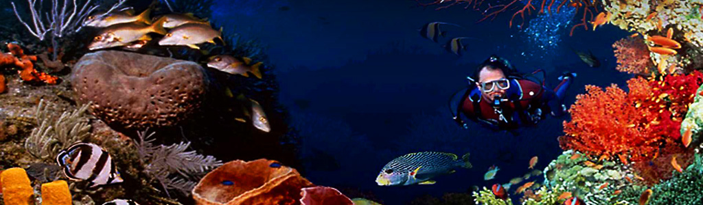

4 Benefits Of trying New Things
1. Time becomes more memorable.
Ever heard that time moves faster as you get older? In part, this is because life stabilizes so much once you enter adulthood. In other words, you fall into a routine, and days become so similar that, before you know it, years have passed. By trying new things regularly (every 30 days—or even every year!), time becomes marked by these hobbies, no matter how steady your day-to-day work life is. You might have an onslaught of pictures because you tried photography for the first time, or you might have a slew of dinner parties because you tried gardening for the first time. Essentially, by trying new things, you benefit from new and special memories that will last a lifetime.
2. Fear takes a backseat and your sense of adventure grows.
One of the best and most exciting benefits of trying new things is that you overcome fear. It might sound too good to be true, but the reality is that fear is simply our reaction to the unknown. So when you try the unknown (and especially when you try it over and over and over), you realize that your mind is usually just exaggerating—that the worst outcome is rarely the true outcome. As you practice foraying into new things, fear will transform from a crippling factor to a minor speed bump. Then, your adventurous self is set free, and let’s face it: our adventurous selves are fun and exciting. Approaching new tasks with the spirit of adventure sets us up for success and that helps us approach the next challenge with more confidence. It doesn’t matter whether the adventure is huge, like summiting Kilimanjaro, or tiny, like doodling once a day. Whatever it is, you’ll come out of trying new things happier and more passionate about life.
3. You’ll get to know yourself better.
What if the next new thing you try is the passion of your life? Maybe you were always meant to embroider or longboard professionally. Or maybe not. Either way, you’ll learn about yourself. The more you try, the more you’ll learn about your likes and dislikes—because they’re unique to you! As you do so, you’ll figure out who you are and who you want to become. Even if you think you know yourself pretty darn well, you’ll learn something new because you’re putting yourself in a new situation. And we never really know unless we try, right?
4. Creativity and brainpower will be stimulated.
Our favorite benefit of trying new things is that it actually increases your creative capacity. Every single time you put yourself in a new situation, you force your brain to quickly understand a unique set of circumstances, process how to handle those circumstances and develop a new set of skills. In other words, you’re training your brain to creatively solve every time you try something new. So, if you’re trying gardening for the first time, your brain is working in a new unique way. Even if gardening is old news for you, try beets for the first time — there’s a unique set of rules and so your brain will use its creativity to find a way to succeed.
